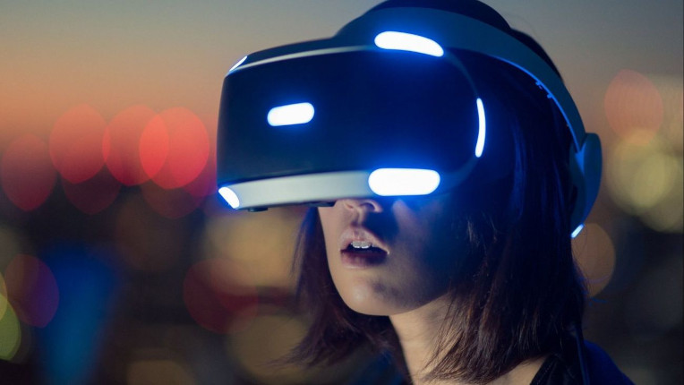
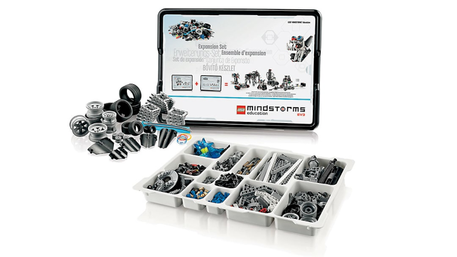
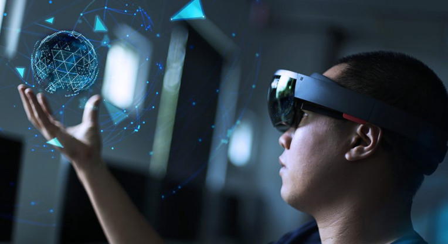
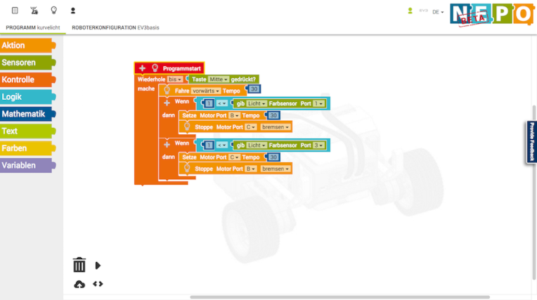

Data e Hora - Javascript
Realidade Virtual
O que é Realidade Virtual
Para que você entenda como funciona a Realidade Virtual, vamos te explicar seu conceito.
Chamamos de RV o ambiente no qual pode-se criar uma realidade alternativa, por meio de dispositivos tecnológicos, que simulam o mundo real.
Ainda que seja um universo semelhante ao verdadeira, trata-se de um espaço virtual, desenvolvido artificialmente. Dessa forma, o indivíduo consegue ter uma experiência bem realista — algumas simulações podem até incluir sensações táteis.
Essa área tem crescido consideravelmente nos últimos anos. Hoje, temos óculos especiais e fones de ouvido que possibilitam uma imersão mais profunda no ambiente virtual, seja para o entretenimento ou para trabalho.
Qual o objetivo da realidade virtual?
Ainda deseja saber para que serve a Realidade Virtual? Seu maior objetivo é projetar no meio digital elementos do mundo físico, em tempo real.
Para isso, utiliza-se técnicas e ferramentas tecnológicas para aumentar a sensação de realidade para o indivíduo. Em suma, a RV consiste em uma simulação do mundo real em uma plataforma informatizada.
Quais os benefícios da realidade virtual?
Depois de entender o que é Realidade Virtual, chegou o momento de conhecer seus benefícios. Do ponto de vista mercadológico, essa tecnologia possibilita enxergar as operações a partir de um novo viés. Confira suas principais vantagens a seguir.
A Realidade Virtual pode te ajudar a ganhar vantagem competitiva no mercado. Em uma empresa de arquitetura, por exemplo, essa tecnologia possibilita que as renderizações 3D dos projetos ganhem mais uma funcionalidade.
Com a RV, o cliente consegue caminhar pelo projeto e examinar cada detalhe. Ao vivenciar uma experiência diferenciada, as chances dele contratar os serviços dessa empresa aumentam.
Quais são os tipos de realidade virtual?
Os sistemas de Realidade Virtual mudam conforme o tipo de interação e imersão que oferecem ao usuário. Esses diferentes níveis variam conforme a potência e o desempenho da tecnologia que constrói a simulação. Um ambiente virtual com tele-presença, significa que o indivíduo se vê imerso em um mundo virtual, independentemente da sua localização real.
Já um ambiente RV de tele-operação utiliza recursos tecnológicos para conectar pessoas à distância, como aplicativos de vídeo. Veja outros exemplos de Realidade Virtual:
• VR de simulação: usa ferramentas que possibilitam ao usuários se sentir em um ambiente inteiramente virtual, mesmo estando no mundo físico;
• VR de projeção: o usuário se encontra no mundo físico, mas consegue se comunicar com objetos e personagens virtuais;
• VR aumentada: utiliza um dispositivo visual específico para oferecer uma imersão com o mundo virtual, como o Oculus Rift;
• VR de mesa: usa-se dispositivos com óculos e monitores para que o usuário consiga interagir com o mundo virtual.
Lego Mindstorm
O que é realmente a LEGO MINDSTORMS?
Bem, dito de forma simples, Lego Mindstorms é um conjunto de sala de aula da LEGO que utiliza os bem conhecidos tijolos, bem como software menos conhecido que pode ser utilizado para criar robôs programáveis.
A LEGO é popular entre as crianças e a sua familiaridade com os tijolos LEGO ajuda-as a saltar directamente para a criação de robôs. O software utilizado para programar robôs LEGO é simples para alunos e professores utilizarem tanto para animar robôs, tornando o ensino e aprendizagem da programação fácil, eficaz e agradável.
LEGO® MINDSTORMS® EV3 é a terceira geração da programação com o kit LEGO para salas de aula; é o conjunto mais recente e actualizado.
Quais são as vantagens da LEGO MINDSTORMS?
O principal benefício da LEGO® Education sempre foi a imersão total das crianças na experiência de aprendizagem; dar-lhes actividades práticas e físicas que acendam a criatividade.
A LEGO MINDSTORMS permite aos alunos utilizar a aprendizagem baseada em projectos para melhorar as suas capacidades de resolução de problemas e de trabalho em equipa. Introduzindo um conhecimento mais profundo da informática e dos mundos STEM, a tecnologia LEGO MINDSTORMS pode ser imediatamente utilizada na sala de aula.
O kit inclui todos os tijolos necessários para fazer uma série de robôs e o software é realmente fácil de utilizar, mesmo para professores de informática não especialistas mergulhando os seus dedos dos pés na programação.
Os benefícios de ensinar codificação e programação são de grande alcance; as competências de resolução de problemas que são tão frequentemente necessárias para o domínio da matemática, bem como as competências de codificação do mundo real, são dois dos principais benefícios.
Mas, a criatividade, o pensamento lógico e as capacidades de colaboração são também de enormes benefícios na construção de robôs de codificação.
Como utilizar os LEGO MINDSTORMS
Criado com simplicidade e facilidade de utilização em mente, o software que vem com o kit LEGO® MINDSTORMS® EV3 utiliza a programação de arrastar e largar que os alunos já estarão familiarizados desde as primeiras experiências.
Intuitivo e perfeito para a construção de códigos simples, os alunos podem aperfeiçoar as suas competências com confiança até estarem prontos para se prepararem para algoritmos mais complexos.
Assim que os alunos estiverem no nível em que podem transferir a sua aprendizagem para linguagens de codificação mais complexas, pode introduzir a linguagem de programação MicroPython do EV3.
MicroPython é um trampolim para a linguagem de programação do mundo real de Python, uma habilidade valiosa e a pedido nos locais de trabalho do futuro.
Torneio Robótica
Estamos vivendo a era da transformação digital. E sabemos que você tem todo o potencial para ser protagonista deste momento. Que tal mostrar para o mundo seus conhecimentos em engenharias, tecnologias da informação e ciências da computação em uma competição?
Nesta edição, você deve formar uma equipe de dois a seis integrantes para programar robôs que solucionem problemas de conectividade 5G, criptomoedas, Internet das Coisas (IoT), veículos autônomos e muito mais.
Topa o desafio?

É possível participar das três arenas. Confira a programação de cada uma delas:
Arena 1 – atividades remotas
Nesta arena totalmente remota, as equipes usarão a plataforma OPEN Roberta e o sistema Lego EV3 para solucionar problemas de comunicação 5G; manufatura aditiva; Internet das Coisas (IOT); Indústria 4.0 e criptomoedas.
Para isso, é preciso de pelo menos um ou dois computadores, conexão de internet e dos programas citados acima já instalados em suas máquinas. O tapete, onde serão realizados os desafios, é fornecido pela organização do torneio.
As três melhores equipes ganham prêmios em dinheiro, que vão de R$ 800 a R$ 3.000.
Arena 2 – atividades híbridas
Nesta arena com atividades híbridas, as equipes usarão seus conhecimentos em Eletroeletrônica, Programação e Mecatrônica para solucionar problemas dos processos de produção e logística que utilizam veículos autônomos.
Na etapa presencial, será avaliado o desempenho dos robôs que deverão cumprir um determinado percurso no menor tempo possível e com o menor número de falhas.
As três melhores equipes ganham prêmios em dinheiro, que vão de R$ 1.000 a R$ 4.000.
Arena 3 – atividades presenciais
Nesta arena, as atividades serão presenciais. Cada equipe deve montar um robô com o Kit Lego MindStorms e um dos sistemas Lego (Spike, EV3 ou NXT) para superar 10 desafios.
São eles a solução de problemas de conectividade 5G; machine learning; veículos autônomos; cibernética; Internet das Coisas (IoT); Indústria 4.0; FinTechs; Inteligência Artificial (IA); manufatura aditiva e, por fim, criptomoedas.
As três melhores equipes ganham prêmios em dinheiro, que vão de R$ 1.000 a R$ 4.000.
Realidade Aumentada
Realidade Aumentada (RA) é uma tecnologia que permite sobrepor elementos virtuais à nossa visão da realidade. Cada vez mais demandada, essa tecnologia se converterá em um negócio que vai movimentar, em 2020, cerca de 120 bilhões de dólares no mundo.
O termo foi criado em 1992 pelo cientista e pesquisador Thomas P. Caudell durante o desenvolvimento de um dos aviões mais famosos do mundo: o Boeing 747. Caudell observou que os operários responsáveis pela montagem da nova aeronave perdiam muito tempo interpretando as instruções e pensou: o que aconteceria se eles tivessem acesso a um monitor que os guiasse durante a instalação? A invenção não foi bem-sucedida, mas foi nesse momento que nasceu o conceito de R.A
Foi em 1992, então, que surgiu o conceito de RA, e não, tal como muitos acreditam, no verão de 2016, quando fomos contagiados pela febre do Pokémon GO, um videogame que o jogador deve procurar e capturar diferentes personagens da saga japonesa. Em seu auge, o game atingiu a marca astronômica de 45 milhões de usuários diários ativos.
O Pokémon GO popularizou a RA. Ele aproximou essa tecnologia do grande publico — de todos os públicos —, mas, naquela época, já eram muitas as empresas de diversos setores (saúde, educação, arquitetura, serviços, varejo, etc.) que começavam a utilizá-la com o objetivo de criar experiências de valor para seus clientes.
Open Roberta
O Google lançou recentemente na Alemanha o projeto "Open Roberta", uma plataforma baseada em nuvem visando ajudar estudantes e professores a programar pequenos robôs feitos partir dos kits de hardware "LEGO Mindstorms", produzidos pela companhia homônima.
De acordo com informações do site 9to5google, a partir de uma parceria financiada em 1 milhão de euros (aproximadamente R$ 3,16 milhões) com a empresa de TI germânica Fraunhofer IAIS, desde a primavera de 2013, a gigante do motor de busca visa criar um software de código aberto e disponível na nuvem para que alunos e professores possam estudar sem se preocupar com repetitivos updates no sistema.
A Lego Education já disponibilizou 160 kits de 10 pacotes cada um para uso interno nas escolas da Alemanha, mas o Open Roberta permitirá que os estudantes possam dar continuidade aos projetos em casa também.
Outra parceria semelhante do Google na Europa é entre o Code Club e o Technology Will Save Us para fornecer a estudantes kits baseados em Arduino para o desenvolvimento de consoles para games. Aqui no Brasil, kits para ensino de robótica desenvolvidos pela LEGO são fornecidos pela Zoom Education for Life.
Matérias - T.I
TI 1° Bimestre : Estudamos e aprendemos lógica da programação com Scratch, Netbeans e Java online, fazendo algumas estrutaras simples de código (estruras de comunicação com o usuário e máquina).
TI 2° Bimestre : Prosseguimos com o uso do Netbeans e passamos a praticar dentro dele o uso de janela e montagem de programas, formatos visuais da janela simples, calculadoras e partes de sistemas para registro como de contagem e classificação.
TI 3° Bimestre : Finalmente saindo do Netbeans nos encaminhamos a estudar sobre SQL e outros modelos de DATA base para servidores assim com o objetivo de entender como funcionam e perceber que certos códigos práticados no bimestre anterior também eram pra uso de estruturas maiores.